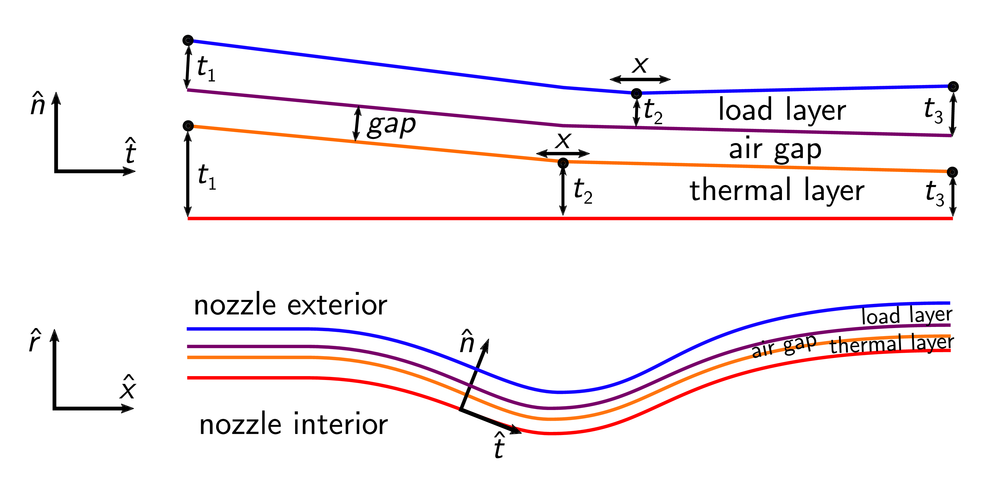

Zach del Rosario
Table of Contents
1 Hello!

Figure 1: Hi! Welcome to my personal site.
This is my personal site: It's essentially an extended CV. See this for my more traditional CV. My email is zdrcrow@stanford.edu (remove any corvids if you're not a robot).
2 Mission and Skills
I believe false certainty is one of the greatest challenges we face in the 21st century. False certainty contributed to voter complacency in the 2016 election.silver2017 Citing a lack of certainty is the favorite tactic of climate change deniers.shapiro2018 Generally, people tend to seek absolute knowledge where it does not exist, closing themselves off from the possibility of learning. My research, teaching, and service are all connected to the same goal – helping us manage uncertainty.
I have a unique blend of skills that I leverage in my work:
2.1 Human-centered Engineering
I first trained as a mechanical engineer at Olin College of Engineering, whose curriculum emphasizes a people-first approach to problem solving. There I developed the tools and mindset to identify and frame human problems – a skillset I carried to my graduate studies. At Stanford I am pursuing a PhD in Aerospace Engineering under the supervision of Gianluca Iaccarino and Art Owen. This unique combination of investigative and analytic skills enabled me to effectively interview numerous engineers while interning at Northrop Grumman Corp., which directly led to my work on principled margin.
2.2 Statistics and Data Science
While at Stanford, I've had the great fortune to learn from classical statisticians (Art Owen) and data scientists (Hadley Wickham). I'm an alum of the Data Challenge Lab, and I incorporate statistics and data science in my research, teching, and service. My graduate training in statistics has enabled me to pursue a more rigorous treatment of uncertainty in my work on principled margin, and my training in data science and visualization has influenced my work on algorithms for insight.
2.3 Pedagogy
I have also pursued formal training in teaching at Stanford. I had the great fortune to learn from Sheri Sheppard, both through her class on course design (ENGR 312), and through collaborating on ASEE Stanford Chapter events. I was recognized by Stanford VPTL for my teaching abilities, and was hired as a teaching consultant in the autumn of 2018.
3 Research
I am interested in how information flows through the engineering design process. Modern advances in data collection, computation, and algorithms have opened the door to new ways to find engineering and scientific insights. These developments enable new approaches to old engineering problems, and promise increased efficiency and safety.
3.1 Principled Margin
Engineers design safe solutions for human needs. Designers achieve safety in part through engineering margins. My work on Principled Margin is focused on deriving data-driven engineering margins with provable properties.
Selected Publications:
- "Cutting the Double Loop: Theory and Algorithms for Reliability-Based Design Optimization with Statistical Uncertainty":zdr2018_double_loop In this work, I derive a provably-conservative design margin for engineering design under uncertainty.

Figure 2: Example results from "Cutting the Double Loop"; my novel margin in probability (MIP) approach is provably-conservative, leading to quantifiable properties in the resulting design.
- "Beyond Basis Values: Fast Precision Margin with FORM":zdr2019 In this work, I further develop the techniques introduced in "Cutting the Double Loop", and introduce algorithmic advances to enable fast computation of precision margin. With my collaborator Rick Fenrich, we demonstrate these techniques on the design of a complex, multi-physics supersonic nozle.

Figure 3: Schematic depiction of nozzle design. With Rick, I demonstrated that designing this expensive, complex engineering system with principled margin is feasible.
3.2 Algorithms for Insight
The pace and output of engineering and science has changed. Where the analysts of yesterday made brilliant insights based on sparse observations, today's engineers and scientists are faced with a torrent of conflicting data. My work on Algorithms for Insight is focused on physics-constrained algorithms to extract relevant insights.
Selected Publications:
- "Developing Design Insight Through Active Subspaces":zdr2017 In this award-winning paper (Jefferson Goblet, AIAA SciTech 2017), I demonstrate the use of modern model-reduction techniques to gain qualitative insights into engineering systems. For instance, I show that one can recover classical insights into aircraft design through an automated, data-driven approach.
- "Lurking Variable Detection via Dimensional Analysis":zdr2017f In this work, I introduce techniques to detect unknown unknowns, so-called lurking variables. These techniques are based on classical ideas of dimensional analysis – the idea that physical phenomena are ultimately independent of human-defined measurement systems. I re-interpret this classic insight in a modern context to enable lurking variable detection.
4 Teaching
4.1 ME 470: Uncertainty Quantification
I will be teaching the Stanford course ME 470: Uncertainty Quantification in the Spring quarter of 2019. I'll have more to say about this after that point….
4.2 VPTL Teaching Consultant
I have been a Teaching Consultant with the Office of the Vice Provost for Teaching and Learning (VPTL) since the Autumn of 2018. As a consultant, I have been recognized for my teaching skills, and leverage these abilities to train my peers. Through VPTL I provide a variety of professional-development services to other Stanford graduate students, aimed at helping them improve their teaching skills. I leverage a combination of in-class experience and knowledge of the education literature in these consultations, and strive to help folks recognize and develop their unique teaching style.
5 Service
5.1 ASEE Stanford Chapter President
I have been involved with the American Society for Engineering Education (ASEE), Stanford Chapter since 2016. Now I serve as the chapter president, organizing our portfolio of events with our officer team. Stanford ASEE offers a seminar sequence and annual colloquium. During my work with the chapter, we produced the 2018 Colloquium on Education at Scale, which examined the challenges and opportunities of scale facing educators in the modern context. We also introduced a journal club, which allows members to dig more deeply into the education literature.

Figure 4: ASEE Breakfast Chat featuring Prof. Sheri Sheppard.
5.2 SeeME co-Founder and Director of Curriculum
With my labmate Ohi Dibua, I founded SeeME in the fall of 2016. SeeME is an outreach program hosted by Stanford Mechanical Engineering which seeks to 1. Get kids from traditionally underrepresented backgrounds excited about science and engineering, and 2. equip Stanford graduate students with teaching and speaking skills. Our inaugural event was well-received, and garnered support from both the department and the university at large.
5.2.1 Outreach Activities

Figure 5: SeeME team and students, 2017.
5.2.2 Personal Contribution

Figure 6: Leading my "Engineering is for Everyone" activity at SeeMe 2017.
6 Bibliography
Bibliography
- [silver2017] @miscsilver2017, title = The Real Story of 2016, howpublished = \urlhttps://fivethirtyeight.com/features/the-real-story-of-2016/, note = Accessed: 2018-12-21, publisher = FiveThirtyEight, author = Silver, Nate
- [shapiro2018] @miscshapiro2018, title = The thinking error at the root of science denial, howpublished = \urlhttps://theconversation.com/the-thinking-error-at-the-root-of-science-denial-96099, note = Accessed: 2018-12-21, publisher = The Conversation, author = Shapiro, Jeremy
- [zdr2018_double_loop] del Rosario, Fenrich & Iaccarino, Cutting the Double Loop: Theory and Algorithms for Reliability-Based Design Optimization with Statistical Uncertainty, International Journal for Numerical Methods in Engineering, (Accepted).
- [zdr2019] del Rosario, Fenrich & Iaccarino, Beyond Basis Values: Fast Precision Margin with FORM, 1090, in edited by 21st AIAA Non-Deterministic Approaches Conference (2019)
- [zdr2017] del Rosario, Constantine & Iaccarino, Developing Design Insight Through Active Subspaces, 1090, in edited by 19th AIAA Non-Deterministic Approaches Conference (2017)
- [zdr2017f] del Rosario, Lee & Iaccarino, Lurking Variable Detection via Dimensional Analysis, arXiv preprint arXiv:1711.03918, (2018, In review).